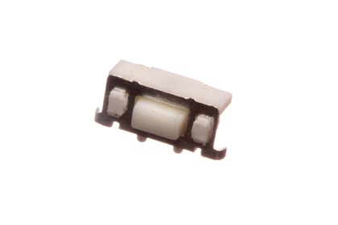
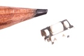
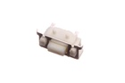

7 mm SMD Pushbutton (Tactile) - B7S

Summary
Name: 7 mm SMD Pushbutton (Tactile)
ID: BUTA-07-X-SMDS-01
Hex ID: B7S
WebPage: https://github.com/oomlout/oomlout-OOMP/wiki/BUTA-07-X-SMDS-01
Short URL: http://oom.lt/B7S
Revision History: https://github.com/oomlout/oomlout-OOMP/blob/master/parts/BUTA-07-X-SMDS-01/
| Type |
Size |
Color |
Description |
Index |
BUTA
Pushbutton (Tactile) |
07
7 mm |
X
|
SMDS
SMD |
01
|
Images


About
A commonly used surface mount pushbutton. With the button on the side rather than the top.
Common Uses
This part is commonly used as:
*a reset button for a microcontroller.
Specifications
| Info |
Value |
| Type |
Pushbutton (Tactile) |
| Size |
7 mm |
| Description |
SMD |
| Width |
3.5 mm |
| Height |
3.55 mm |
| Length |
7 mm |
Extra Details
Spotted a mistake, want to add more? Let us know oomp@oomlout.com
All images and resources are licensed [CC BY-SA] unless otherwise stated (ie. the datasheets)